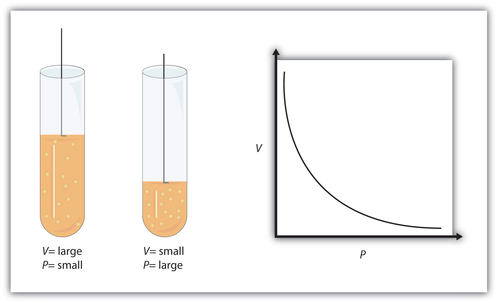
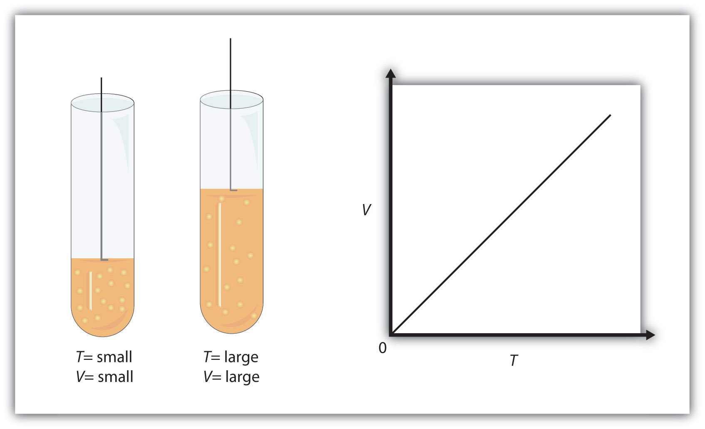

When seventeenth-century scientists began studying the physical properties of gases, they noticed some simple relationships between some of the measurable properties of the gas. Take pressure (P) and volume (V), for example. Scientists noted that for a given amount of a gas (usually expressed in units of moles [n]), if the temperature (T) of the gas was kept constant, pressure and volume were related: As one increases, the other decreases. As one decreases, the other increases. We say that pressure and volume are inversely related.
There is more to it, however: pressure and volume of a given amount of gas at constant temperature are numerically related. If you take the pressure value and multiply it by the volume value, the product is a constant for a given amount of gas at a constant temperature:
P × V = constant at constant n and TIf either volume or pressure changes while amount and temperature stay the same, then the other property must change so that the product of the two properties still equals that same constant. That is, if the original conditions are labeled P1 and V1 and the new conditions are labeled P2 and V2, we have
P1V1 = constant = P2V2where the properties are assumed to be multiplied together. Leaving out the middle part, we have simply
P1V1 = P2V2 at constant n and TThis equation is an example of a gas law. A gas lawA simple mathematical formula that allows one to model, or predict, the behavior of a gas. is a simple mathematical formula that allows you to model, or predict, the behavior of a gas. This particular gas law is called Boyle’s lawA gas law that relates pressure and volume at constant temperature and amount., after the English scientist Robert Boyle, who first announced it in 1662. Figure 6.2 "Boyle’s Law" shows two representations of how Boyle’s law works.
Figure 6.2 Boyle’s Law
A piston having a certain pressure and volume (left piston) will have half the volume when its pressure is twice as much (right piston). One can also plot P versus V for a given amount of gas at a certain temperature; such a plot will look like the graph on the right.
Boyle’s law is an example of a second type of mathematical problem we see in chemistry—one based on a mathematical formula. Tactics for working with mathematical formulas are different from tactics for working with conversion factors. First, most of the questions you will have to answer using formulas are word-type questions, so the first step is to identify what quantities are known and assign them to variables. Second, in most formulas, some mathematical rearrangements (i.e., algebra) must be performed to solve for an unknown variable. The rule is that to find the value of the unknown variable, you must mathematically isolate the unknown variable by itself and in the numerator of one side of the equation. Finally, units must be consistent. For example, in Boyle’s law there are two pressure variables; they must have the same unit. There are also two volume variables; they also must have the same unit. In most cases, it won’t matter what the unit is, but the unit must be the same on both sides of the equation.
A sample of gas has an initial pressure of 2.44 atm and an initial volume of 4.01 L. Its pressure changes to 1.93 atm. What is the new volume if temperature and amount are kept constant?
Solution
First, determine what quantities we are given. We are given an initial pressure and an initial volume, so let these values be P1 and V1:
P1 = 2.44 atm and V1 = 4.01 LWe are given another quantity, final pressure of 1.93 atm, but not a final volume. This final volume is the variable we will solve for.
P2 = 1.93 atm and V2 = ? LSubstituting these values into Boyle’s law, we get
(2.44 atm)(4.01 L) = (1.93 atm)V2To solve for the unknown variable, we isolate it by dividing both sides of the equation by 1.93 atm—both the number and the unit:
Note that, on the left side of the equation, the unit atm is in the numerator and the denominator of the fraction. They cancel algebraically, just as a number would. On the right side, the unit atm and the number 1.93 are in the numerator and the denominator, so the entire quantity cancels:
What we have left is
Now we simply multiply and divide the numbers together and combine the answer with the L unit, which is a unit of volume. Doing so, we get
V2 = 5.07 LDoes this answer make sense? We know that pressure and volume are inversely related; as one decreases, the other increases. Pressure is decreasing (from 2.44 atm to 1.93 atm), so volume should be increasing to compensate, and it is (from 4.01 L to 5.07 L). So the answer makes sense based on Boyle’s law.
Test Yourself
If P1 = 334 torr, V1 = 37.8 mL, and P2 = 102 torr, what is V2?
Answer
124 mL
As mentioned, you can use any units for pressure or volume, but both pressures must be expressed in the same units, and both volumes must be expressed in the same units.
A sample of gas has an initial pressure of 722 torr and an initial volume of 88.8 mL. Its volume changes to 0.663 L. What is the new pressure?
Solution
We can still use Boyle’s law to answer this, but now the two volume quantities have different units. It does not matter which unit we change, as long as we perform the conversion correctly. Let us change the 0.663 L to milliliters:
Now that both volume quantities have the same units, we can substitute into Boyle’s law:
The mL units cancel, and we multiply and divide the numbers to get
P2 = 96.7 torrThe volume is increasing, and the pressure is decreasing, which is as expected for Boyle’s law.
Test Yourself
If V1 = 456 mL, P1 = 308 torr, and P2 = 1.55 atm, what is V2?
Answer
119 mL
There are other measurable characteristics of a gas. One of them is temperature (T). Perhaps one can vary the temperature of a gas sample and note what effect it has on the other properties of the gas. Early scientists did just this, discovering that if the amount of a gas and its pressure are kept constant, then changing the temperature changes the volume (V). As temperature increases, volume increases; as temperature decreases, volume decreases. We say that these two characteristics are directly related.
A mathematical relationship between V and T should be possible except for one thought: what temperature scale should we use? We know from Chapter 2 "Measurements" that science uses several possible temperature scales. Experiments show that the volume of a gas is related to its absolute temperature in Kelvin, not its temperature in degrees Celsius. If the temperature of a gas is expressed in kelvins, then experiments show that the ratio of volume to temperature is a constant:
We can modify this equation as we modified Boyle’s law: the initial conditions V1 and T1 have a certain value, and the value must be the same when the conditions of the gas are changed to some new conditions V2 and T2, as long as pressure and the amount of the gas remain constant. Thus, we have another gas law:
This gas law is commonly referred to as Charles’s lawA gas law that relates volume and temperature at constant pressure and amount., after the French scientist Jacques Charles, who performed experiments on gases in the 1780s. The tactics for using this mathematical formula are similar to those for Boyle’s law. To determine an unknown quantity, use algebra to isolate the unknown variable by itself and in the numerator; the units of similar variables must be the same. But we add one more tactic: all temperatures must be expressed in the absolute temperature scale (Kelvin). As a reminder, we review the conversion between the absolute temperature scale and the Celsius temperature scale:
K = °C + 273where K represents the temperature in kelvins, and °C represents the temperature in degrees Celsius.
Figure 6.3 "Charles’s Law" shows two representations of how Charles’s law works.
Figure 6.3 Charles’s Law
A piston having a certain volume and temperature (left piston) will have twice the volume when its temperature is twice as much (right piston). One can also plot V versus T for a given amount of gas at a certain pressure; such a plot will look like the graph on the right.
A sample of gas has an initial volume of 34.8 mL and an initial temperature of 315 K. What is the new volume if the temperature is increased to 559 K? Assume constant pressure and amount for the gas.
Solution
First, we assign the given values to their variables. The initial volume is V1, so V1 = 34.8 mL, and the initial temperature is T1, so T1 = 315 K. The temperature is increased to 559 K, so the final temperature T2 = 559 K. We note that the temperatures are already given in kelvins, so we do not need to convert the temperatures. Substituting into the expression for Charles’s law yields
We solve for V2 by algebraically isolating the V2 variable on one side of the equation. We do this by multiplying both sides of the equation by 559 K (number and unit). When we do this, the temperature unit cancels on the left side, while the entire 559 K cancels on the right side:
The expression simplifies to
By multiplying and dividing the numbers, we see that the only remaining unit is mL, so our final answer is
V2 = 61.8 mLDoes this answer make sense? We know that as temperature increases, volume increases. Here, the temperature is increasing from 315 K to 559 K, so the volume should also increase, which it does.
Test Yourself
If V1 = 3.77 L and T1 = 255 K, what is V2 if T2 = 123 K?
Answer
1.82 L
It is more mathematically complicated if a final temperature must be calculated because the T variable is in the denominator of Charles’s law. There are several mathematical ways to work this, but perhaps the simplest way is to take the reciprocal of Charles’s law. That is, rather than write it as
write the equation as
It is still an equality and a correct form of Charles’s law, but now the temperature variable is in the numerator, and the algebra required to predict a final temperature is simpler.
A sample of a gas has an initial volume of 34.8 L and an initial temperature of −67°C. What must be the temperature of the gas for its volume to be 25.0 L?
Solution
Here, we are looking for a final temperature, so we will use the reciprocal form of Charles’s law. However, the initial temperature is given in degrees Celsius, not kelvins. We must convert the initial temperature to kelvins:
−67°C + 273 = 206 KIn using the gas law, we must use T1 = 206 K as the temperature. Substituting into the reciprocal form of Charles’s law, we get
Bringing the 25.0 L quantity over to the other side of the equation, we get
The L units cancel, so our final answer is
T2 = 148 KThis is also equal to −125°C. As temperature decreases, volume decreases, which it does in this example.
Test Yourself
If V1 = 623 mL, T1 = 255°C, and V2 = 277 mL, what is T2?
Answer
235 K, or −38°C
Define gas law. What restrictions are there on the units that can be used for the physical properties?
What unit of temperature must be used for gas laws?
Boyle’s law relates the _____________ of a gas inversely with the ___________ of that gas.
Charles’s law relates the _____________ of a gas directly with the ___________ of that gas.
What properties must be held constant when applying Boyle’s law?
What properties must be held constant when applying Charles’s law?
A gas has an initial pressure of 1.445 atm and an initial volume of 1.009 L. What is its new pressure if volume is changed to 0.556 L? Assume temperature and amount are held constant.
A gas has an initial pressure of 633 torr and an initial volume of 87.3 mL. What is its new pressure if volume is changed to 45.0 mL? Assume temperature and amount are held constant.
A gas has an initial pressure of 4.33 atm and an initial volume of 5.88 L. What is its new volume if pressure is changed to 0.506 atm? Assume temperature and amount are held constant.
A gas has an initial pressure of 87.0 torr and an initial volume of 28.5 mL. What is its new volume if pressure is changed to 206 torr? Assume temperature and amount are held constant.
A gas has an initial volume of 638 mL and an initial pressure of 779 torr. What is its final volume in liters if its pressure is changed to 0.335 atm? Assume temperature and amount are held constant.
A gas has an initial volume of 0.966 L and an initial pressure of 3.07 atm. What is its final pressure in torr if its volume is changed to 3,450 mL? Assume temperature and amount are held constant.
A gas has an initial volume of 67.5 mL and an initial temperature of 315 K. What is its new volume if temperature is changed to 244 K? Assume pressure and amount are held constant.
A gas has an initial volume of 2.033 L and an initial temperature of 89.3 K. What is its volume if temperature is changed to 184 K? Assume pressure and amount are held constant.
A gas has an initial volume of 655 mL and an initial temperature of 295 K. What is its new temperature if volume is changed to 577 mL? Assume pressure and amount are held constant.
A gas has an initial volume of 14.98 L and an initial temperature of 238 K. What is its new temperature if volume is changed to 12.33 L? Assume pressure and amount are held constant.
A gas has an initial volume of 685 mL and an initial temperature of 29°C. What is its new temperature if volume is changed to 1.006 L? Assume pressure and amount are held constant.
A gas has an initial volume of 3.08 L and an initial temperature of −73°C. What is its new volume if temperature is changed to 104°C? Assume pressure and amount are held constant.
A gas law is a simple mathematical formula that allows one to predict the physical properties of a gas. The units of changing properties (volume, pressure, etc.) must be the same.
pressure; volume
amount of gas and temperature
2.62 atm
50.3 L
1.95 L
52.3 mL
260 K
444 K, or 171°C